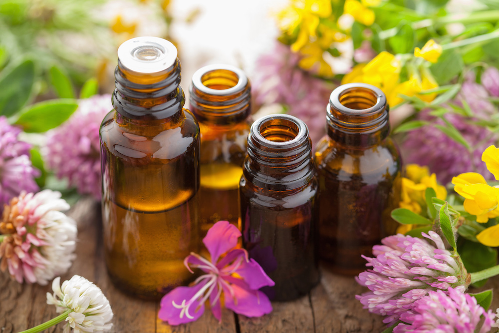

"Disease of the body itself is nothing but the result of the disharmony between soul and mind. Remove the disharmony, and we regain harmony between soul and mind, and the body is once more perfect in all its parts."
― Dr. Edward Bach
"Disease of the body itself is nothing but the result of the disharmony between soul and mind. Remove the disharmony, and we regain harmony between soul and mind, and the body is once more perfect in all its parts."
― Dr. Edward Bach
Bach Flower Essences or Bach Flower Remedies (flower therapy) are gentle, holistic and natural way of removing misbalance on all levels: mental, emotional, energy and body. These remedies help overcoming obstacles preventing us to achieve harmony with ourselves as well as our surroundings, and are used worldwide as a complementary therapy for more than 80 years.
The concept of Bach Flower Remedies is based on a notion that every human being is healthy and happy when is in balance with its own nature – when we are authentic. Main cause of physical illness is a misbalance in soul-mind-body relation. Physical symptoms are just an external manifestation of a disturbed inner balance. The ultimate purpose of these remedies is to remove any obstacle in life flow and to achieve harmony of the Soul-Mind-Body. These remedies help increase the energy levels, treating the person as a whole, opening channels of our Being and unlocking potential, helping the Soul to reconnect with yourself. Bach’s 38 flower remedies are a powerful helper on a path of self-realization, treating 38 known negative mental and emotional states (e.g. apathy, possessiveness, intolerance, sorrow, anger, fears…).
Remedies have no negative side effects and can be safely used even in pregnancy, for babies, pets or plants.
AGRIMONY
+ Exudes warmth and is open about one’s feelings. Cheerful and diplomatic.
- Hides problems behind a cheerful face. Inability to show one’s feelings.
ASPEN
+ Inner peace and security, desire for adventure. Fearless.
- Fearful and worried for no specific reason. Feelings of foreboding.
BEECH
+ Tolerance, compassion, unity with others. Ability to see the good in others despite their apparent imperfections.
- Critical intolerant of other’s shortcomings. Feelings of superiority, judge mental and arrogant.
CENTAURY
+ Serves willingly and unobtrusively but without denying one’s own needs. Unhampered by the opinions of others.
- Difficulty in saying “no”. Imposed upon/bullied by others. Anxious to please others, denying one’s own needs.
CERATO
+ Self confident and decisive. Ability to follow one’s own judgment.
- Lack of trust in one’s own judgment, constantly seeking confirmation from others.
CHERRY PLUM
+ Emotions in control, able to think and act rationally. Respectful of friends, family and self.
- Abusive to family and friends, fear of losing control of behaviour.
CHESTNUT BUD
+ Ability to observe one’s mistakes objectively and honestly and learn from the experience and to learn from others.
- Cannot learn from past experience.
CHICORY
+ Unselfish carer. Happy in one’s own company. Fulfilled and self assured. Sensitive to other’s needs.
- Possessive and self centred. Manipulative, opinionated and strong willed; expecting others to conform to one’s own values.
CLEMATIS
+ Open to inspiration and able to fulfil one’s creative potential.
- Difficulty living in the present and making active steps to fulfil potential. Can be withdrawn.
CRAB APPLE
+ Acceptance of oneself. Positivity about oneself and one’s environment.
- Ashamed and uncomfortable with self. Obsessive about cleanliness.
ELM
+ Capable, self assured, confident in one’s ability to cope.
- Overwhelmed by responsibility. Temporarily doubting one’s ability to cope.
GENTIAN
+ Feel that there is no such thing as failure if one has done one’s best. Confidence to attempt any undertaking.
- Feelings of despondency and doubt. Easily discouraged when faced with difficulties.
GORSE
+ Bright and happy and able to cope in the face of adversity.
- Given up; lost hope.
HEATHER
+ Good listener. Unselfish. Able to put one’s own suffering to good use in empathy with others.
- Preoccupied with self and unable to enter in to two way communications with others.
HOLLY
+ Generous hearted, giving without making demands. Compassionate, loving and loveable.
- Feelings of envy, jealousy, hatred and a hard-hearted attitude. Difficulty in loving.
HONEYSUCKLE
+ Ability to see the past as valuable experience providing lessons for today. Can move forward having no regrets.
- Over-attachment to the past. Inability to change the present as stuck in the past.
HORNBEAM
+ Confidence in one’s abilities. Lively mind. Clear headed.
- Mental weariness, doubting ability to face the days work.
IMPATIENS
+ Sympathetic, calm, and relaxed.
- Impatient, irritated by others who are slower therefore, preferring to work alone.
LARCH
+ Determined, capable, realistic. Good at taking initiative, good leader.
- Feelings of inferiority, refusing to acknowledge one’s potential ability.
MIMULUS
+ Quiet courage, facing difficulties with humour and confidence. Standing up for oneself. Can enjoy life with emotions balanced and in control.
- Fearful of everyday things. Tongue tied in company, shy and timid.
MUSTARD
+ Inner peace and calm which remains constant despite difficult circumstances.
- Depressed for no apparent reason, as if in a fog. Feelings can lift as suddenly as they drop.
OAK
+ Strong, high endurance levels, persistence and good energy reserves.
- Inner strength is wavering, fatigue takes over.
OLIVE
+ Able to listen to one’s inner guidance and recognise one’s needs. Able to maintain peace of mind.
- Feeling exhausted in mind and body.
PINE
+ Ability to accept responsibility in a realistic way. Self respect and acceptance of self and others.
- Self reproach. Feeling undeserving. Loss of joy of life. Humility. Lack of self respect.
RED CHESTNUT
+ Ability to be caring without anxiety or smothering. Radiates thoughts of health and courage.
- Over anxious about others. Can cause blockages in relationships.
ROCK ROSE
+ Courageous, presence of mind in an emergency.
- Feelings of terror and a sense of frozen fear when faced with threat. Usually a temporary state.
ROCK WATER
+ Ability to hold high ideals with a flexible attitude. Able to concede one’s own theories to a greater truth.
- Holding high ideals without flexibility. Can be self denying – martyrs. Seeking self perfection.
SCLERANTHUS
+ Certainty and decisiveness. Ability to make quick decisions and take prompt action.
- Difficulty in making decisions particularly when faced with two options. Scattered mind. Up and down emotionally.
STAR OF BETHLEHEM
+ Neutralizes the effects of grief and encourages the positive potential of inner strength. Deal with the aftereffects of a life-altering experience. Have comfort and soothe your pain and sorrows.
SWEET CHESTNUT
+ Optimistic. Retains inner strength in spite of external circumstances.
- One feels one has reached the limit of endurance. Feelings of hopelessness can prevail.
VERVAIN
+ Calm, wise and tolerant. Holding strong views but without imposing them on others. Able to take a broad view of life and events.
- Pushing oneself beyond the limits. Racing mind with fanatical inclinations regarding injustice.
VINE
+ Able to encourage and guide others without domination. Wise leader/teachers. Able to use own gifts to help others to find their own path in life.
- Domineering. Demand and expect absolute obedience. Proud.
WALNUT
+ Ability to move forward in life remaining steadfast to one’s own path. Ability to make necessary changes in life.
- Difficulty adapting to change. Oversensitive to certain ideas/ influenced by stronger personalities.
WATER VIOLET
+ Warm relation to others whilst maintaining one’s own counsel. Dignified and empathetic. Happily commits to serving others.
- Proud, aloof, feelings of superiority, condescending. Can be withdrawn and cold.
WHITE CHESTNUT
+ Thoughts under control and put to positive use. Peace of mind, trusting a positive outcome.
- Obsessive worrying thoughts leading to a troubled mind. Inattentive and uncommunicative.
WILD OAT
+ The ability to see a clear picture with positive ideas. Ambitious with the ability to make decisions. Constructive.
- Indecision which way to go at a cross roads in life. Wastes talents through lack of clear direction.
WILD ROSE
+ Ability to use initiative. Interested in life’s work and the world in general. Sense of purpose and well-being. Able to accept responsibility for one’s own life and use initiative to make changes where necessary.
- Feelings of apathy leading to inability to make desired changes in life. Unable to accept responsibility and fulfil one’s own potential.
WILLOW
+ Enjoys life, attracting positive conditions and friends. Feelings of being in control of one’s life.
- Feelings of being a “victim”. Lacking vitality, feeling resentful.
This remedy is a combination of Impatiens, Star of Bethlehem, Cherry Plum, Rock Rose and Clematis and is helpful for shock or stress and can be used at any time.
The best combination for calm and rechargeable sleep after a stressful day is Rescue Remedy and White Chestnut.
For feeling exhausted Olive, Oak and White Chestnut will work magically.
There is no true healing unless there is a change in outlook, peace of mind and inner happiness!
Edward Bach
All we have to do is preserve our personality, to live our own life, be captain of our own ship, and all will be well!
Edward Bach
Healing with the clean, pure, beautiful agents of nature is surely the one method of all which appeals to most of us!
Edward Bach
The real primary diseases of man are such defects as pride, cruelty, hate, self - love, ignorance, instability and greed; and each of these, if considered, will be found to be adverse to Unity!
Edward Bach